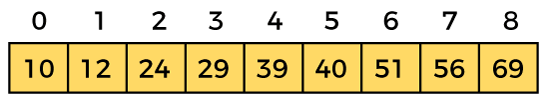
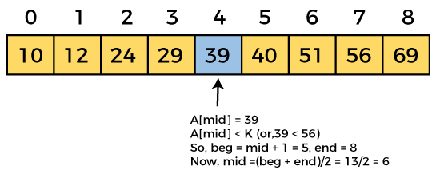
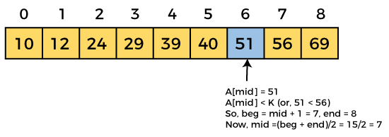
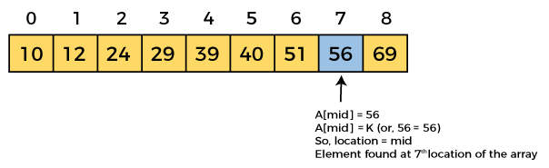

Binary Search Algorithm
In this article, we will discuss the Binary Search Algorithm.
Searching is the process of finding some particular element in the list.
If the element is present in the list, then the process is called successful,
and the process returns the location of that element. Otherwise, the search is called unsuccessful.
Linear Search and Binary Search are the two popular searching techniques.
Here we will discuss the Binary Search Algorithm.
Binary search is the search technique that works efficiently on sorted lists.
Hence, to search an element into some list using the binary search technique, we must ensure that the list is sorted.
Binary search follows the divide and conquer approach in which the list is divided into two halves,
and the item is compared with the middle element of the list.
If the match is found then, the location of the middle element is returned.
Otherwise, we search into either of the halves depending upon the result produced through the match.
Now, let's see the algorithm of Binary Search.
1) First, we have to traverse the array elements using a for loop.
2) In each iteration of for loop, compare the search element with the current array element, and -
If the element matches, then return the index of the corresponding array element.
If the element does not match, then move to the next element.
3) If there is no match or the search element is not present in the given array, return -1.
Now, let's see the algorithm of linear search.
Algorithm:
Binary_Search(a, lower_bound, upper_bound, val) // 'a' is the given array, 'lower_bound' is the index of the first array element, 'upper_bound' is the index of the last array element, 'val' is the value to search
Step 1: set beg = lower_bound, end = upper_bound, pos = - 1
Step 2: repeat steps 3 and 4 while beg <=end
Step 3: set mid = (beg + end)/2
Step 4: if a[mid] = val
set pos = mid
print pos
go to step 6
else if a[mid] > val
set end = mid - 1
else
set beg = mid + 1
[end of if]
[end of loop]
Step 5: if pos = -1
print "value is not present in the array"
[end of if]
Step 6: exit
Working of Binary search:
Now, let's see the working of the Binary Search Algorithm.
To understand the working of the Binary search algorithm, let's take a sorted array. It will be easy to understand the working of Binary search with an example.
There are two methods to implement the binary search algorithm -
- Iterative method
- Recursive method
The recursive method of binary search follows the divide and conquer approach.
Let the elements of array be -

Let the element to search is, K = 56
We have to use the below formula to calculate the mid of the array -
mid = (beg + end)/2
So, in the given array -
beg = 0
end = 8
mid = (0 + 8)/2 = 4. So, 4 is the mid of the array.



Now, the element to search is found. So algorithm will return the index of the element matched.
Binary Search complexity:
Now, let's see the time complexity of Binary search in the best case, average case, and worst case.
We will also see the space complexity of Binary search.
1. Time Complexity
| Case | Time Complexity |
|---|
| Best Case | O(1) |
| Average Case | O(logn) |
| Worst Case | O(logn) |
Best Case Complexity - In Binary search, best case occurs when the element to search is found in first comparison, i.e.,
when the first middle element itself is the element to be searched.
The best-case time complexity of Binary search is
O(1).
Average Case Complexity - The average case time complexity of Binary search is
O(logn).
Worst Case Complexity - In Binary search, the worst case occurs,
when we have to keep reducing the search space till it has only one element.
The worst-case time complexity of Binary search is
O(logn).
2. Space Complexity
The space complexity of binary search is O(1).